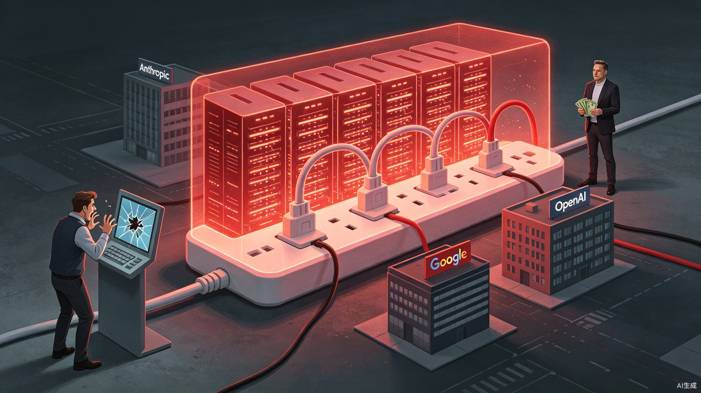

一个员工删掉80亿，马斯克靠给对手供电年赚260亿
追了三年Claude没追上，结果靠收对手的电费活了下来。一个员工的手滑，捅出了一场价值79.6亿美元的窟窿。而就在同一家公司，老板正忙着把闲置的显卡租给那个他追了三年也没追上的对手，一年收租260亿美元。
这不是段子。这是xAI，或者说曾经的xAI，现在的SpaceXAI。
2026年7月7日，马斯克签字画押，xAI正式终止独立运营，更名为SpaceXAI，彻底并入SpaceX体系。就在更名前一天，The Information的记者Amir Efrati爆出一则消息，一个xAI员工在数据迁移时误删了Grok Code模型的核心训练数据。
Efrati配了一句很扎心的调侃，"你最糟糕的工作日也比这位xAI员工最糟糕的一天好上十倍。"坦率地讲，这话一点不夸张。因为这一次"手滑"，直接算力浪费折算下来在2800万到6500万美元之间，加上机会成本，总损失预估79.6亿美元，区间在61亿到98亿。Grok V9的上线被迫推迟3到5周。
一个人的delete键，删掉了一支中型独角兽公司的全部估值。听起来很荒诞对吧。但这只是xAI这一连串魔幻操作里最戏剧性的一个截面。
一、围墙、翻墙、再砌墙
在聊那个员工之前，得先回到xAI追Claude的那段历史。
很多朋友可能不知道，xAI曾经花了数月时间，持续用Anthropic旗下Claude模型的输出数据来训练自家的编程模型。行话叫蒸馏，说人话就是拿别人的成果喂自己的模型，省掉最烧钱的那部分训练工作。
2026年1月，Anthropic发现了这事，一刀切断了xAI的API访问权限。
一般人到这一步就该收手了。但xAI的工程师没放弃，改用个人账号继续偷偷访问Claude。没过多久，个人账号也被封了。然后他们又找到了一家叫Blackbox AI的加密中介，借道继续访问竞品模型。
整段操作就是围墙、翻墙、再砌墙、换条路接着翻。
到了5月，马斯克本人在法庭上作证时承认，Grok的训练"部分"用过OpenAI的模型数据，他当时的原话是"业内很常见"。
怎么说呢，这话不完全是狡辩。大模型行业里互相蒸馏确实不是什么新鲜事，很多公司都在灰色地带试探。但问题在于，xAI把这件事做到了极致，而且做得非常粗糙。被Anthropic发现、被封、用个人账号绕、再被封、找第三方中介借道，这套操作流程连起来看，更像是一个在考试里疯狂作弊还屡次被抓的学生。
回到Grok Code这个产品本身。xAI在编程模型上入局太晚了，2025年8月才推出第一个编程模型，而那时候Claude Code和Codex CLI早已在开发者圈子里成名大半年。V8-Small的参数量大约0.5T，5月中旬马斯克宣布V9-Medium训练完成，参数量1.5T，是V8的三倍，专门针对英伟达Blackwell架构做了优化，还注入了Cursor的真实开发数据。
听着很猛。但入局晚就是晚，你追了三年，对手也没停下来等你。
二、一个delete键背后的组织溃败
现在回到那个误删数据的员工。
坦率地讲，把79.6亿美元的损失归咎于一个人手滑，是很不负责任的归因方式。一次误操作能造成这么大规模的灾难，背后一定是流程、架构、组织管理全部失守。正常的数据迁移，核心训练数据会有多副本备份、权限分级、操作审批、自动化校验，至少四道防线。这四道防线全部失效，才可能出现一个人删掉一切的局面。
说真的，看到这则新闻的时候，我当时就愣住了。不是因为损失金额有多大，而是因为这种级别的管理事故，发生在一家坐拥55万块GPU的公司身上。
没错，55万块GPU。xAI在田纳西州孟菲斯建了Colossus 1超算中心，里面塞满了H100、H200和GB200。这个规模的算力基础设施，全球独此一份。
然而根据SpaceX今年提交的S-1上市文件，这台超算的算力利用率只有11%。
自己用
55万块GPU，算力利用率11%，11位联合创始人全部离职，2025年运营亏损64亿美元。
租给别人
Anthropic月付12.5亿美元，Google月付9.2亿美元，年化收入260亿美元，总合约超700亿美元。
投入了天文数字的算力和资金，实际利用率不到一成。这不是技术问题，这是组织问题。而组织问题从xAI的人才流失轨迹里看得一清二楚。
到2026年3月为止，xAI的11位联合创始人已经全部离职。一个不留。
2026年2月SpaceX以1.25万亿美元收购xAI之后，负责推理、研究、安全的联合创始人在一周内接连告别。5月CFO辞职，算力基础设施负责人Heinrich Kuttler也离开了。更魔幻的是，Cursor的员工进驻了xAI的办公室，大约10名Grok团队的员工被裁。
11个联合创始人全走了，CFO走了，基建负责人走了，核心团队被裁了一轮。然后一个剩下的员工在数据迁移时手滑，删掉了价值80亿美元的数据。这条因果链连起来看，你很难把责任全推到那个按delete的人身上。
当一个团队的核心骨干已经全部流失，留下的人面对的是缺乏文档、缺乏流程、缺乏审查的环境。在这种环境里出重大事故，不是概率问题，是时间问题。
三、260亿租金才是真正的生意
现在来看最有意思的部分。
Colossus 1那55万块GPU，自己只用了11%的算力，剩下89%干嘛呢？租出去。租给谁？租给马斯克追了三年没追上的那些对手。
Anthropic每月付12.5亿美元租Colossus 1的300兆瓦算力，合约签到2029年5月。Google从2026年10月起每月付9.2亿美元。两笔合同加在一起，年化收入260亿美元，总合约价值超过700亿美元。
55万块GPU的年训练成本大约120亿美元，租金净赚140亿。
再看看另一边的账。2025年xAI运营亏损64亿美元。也就是说，自己做模型，一年烧掉64亿还追不上对手。把算力租给对手，一年净赚140亿，利润率比做模型高了不知道多少倍。
这就像你开了个大厨房，雇了最好的厨师团队，结果做出来的菜被隔壁餐厅秒杀，一年亏64亿。后来你发现，把厨房租给隔壁餐厅用，他们每月给你付租金，一年倒赚140亿。做菜不如收房租。
SpaceX的S-1文件里有一句话写得很直白，"让我们能把基础设施里闲置的算力变现"。这句话把整个商业逻辑说透了。马斯克建Colossus的时候可能真想自己做出最好的模型，但后来发现路走不通了。建都建了，总不能让55万块GPU吃灰吧。变现，而且要快速变现。
马斯克自己说，他希望交易周期短一点，因为"某个时候可能需要把算力要回来"。合约里也确实设了90天退出条款。但这话听着更像是给自己留个台阶。以SpaceXAI目前的组织状态和技术进度，就算把算力要回来，谁来用？怎么用？55万块GPU自己用只能跑满11%，要回来又能改变什么？
四、不是没技术，是路线全错了
可能有人看完这些会得出一个结论，说xAI没有技术。我觉得这个判断太粗暴了。
55万块GPU的超算中心，全球唯一。V9-Medium做到1.5T参数量，Blackwell架构优化，这些都是实打实的技术投入。而且SpaceXIPO账上趴着860亿美元现金，弹药管够。
问题不是有没有技术，问题是技术路线全错了。
xAI从一开始就选了一条最笨的路线，用蛮力堆算力、堆参数，试图在基准测试上硬刚Anthropic和OpenAI。但大模型赛道的竞争已经过了"谁的参数大谁赢"的阶段。Claude靠的不是参数规模，是对齐质量、推理能力和产品打磨。OpenAI靠的也不是单纯的技术领先，是生态和先发优势。
xAI选了一条最难走也最没差异化的路。蒸馏Claude、蒸馏OpenAI，说明连训练数据的自有来源都没解决。团队散了、流程崩了、数据被删了，这些全是系统性问题的症状，不是病因。病因在于，从Day One起，xAI就没有找到一条属于自己的路。
现在回头看，SpaceX收购xAI可能才是马斯克最清醒的一次决策。他大概在2025年下半年就想明白了，自己做模型大概率追不上，但55万块GPU是实打实的硬资产。与其让一个涣散的团队继续烧钱，不如把算力变成收租生意，然后让SpaceX的体系来接盘。
五、SpaceXAI的未来是什么
更名SpaceXAI之后，这家公司的身份已经很清楚了。它不再是一家AI模型公司，而是一个算力基础设施提供商。用军火商的逻辑去理解它最贴切，当不了最好的士兵，就当卖子弹的。
750亿美元史上最大IPO，860亿美元现金在手，年化260亿美元的算力租赁收入，这套组合拳打下来，SpaceXAI的财务表现比任何一家纯AI模型公司都好看。
但它面临的风险也很现实。Anthropic和Google的合约都有90天退出条款。一旦这两家对手的算力需求发生变化，或者自己建了足够的基础设施，SpaceXAI的租金收入可能断崖式下跌。而且马斯克自己也暗示了"某个时候要把算力要回来"，一旦他真的这么干，等于自毁信誉，以后的算力租赁生意就更难谈了。
V9模型的前景同样不明朗。编程模型赛道已经挤满了玩家，Cursor、Claude Code、Codex CLI各占山头，Grok Build入局太晚，即便V9参数量做到1.5T，没有产品生态和用户习惯的支撑，很难突围。
SpaceXAI最可能的结局是，继续当算力房东，收租为主，模型为辅。85%以上的收入来自算力租赁，剩下的部分靠Grok系列模型维持存在感。不是什么光荣的结局，但至少是一个能活下来的结局。
留给行业的思考
xAI这三年的故事，其实给整个AI行业提了一个醒。
大模型的竞争，正在从"谁参数大"转向"谁能变现"。投入几千亿建算力，不是终局，只是入场券。怎么让算力产生实际回报，才是真正的考题。
Anthropic和OpenAI靠模型能力和产品生态赚钱，微软和亚马逊靠落地服务赚钱，马斯克靠租显卡赚钱。路径完全不同，但殊途同归。最终的赢家不是算力最多的那个人，是能把算力转化成可持续收入的那个人。
回到开头那个按delete键的员工。他的一个失误，让全世界看到了xAI光鲜外表下的脆弱。但真正让这家公司从模型公司变成算力房东的，不是那次手滑，是一连串从战略到执行再到人才管理的系统性溃败。
很多朋友可能不知道，SpaceX的S-1文件里有一句很平淡的话，"让我们能把基础设施里闲置的算力变现"。这句话没有任何修辞，没有任何修饰，却精准地概括了xAI三年苦追Claude的最终结局。